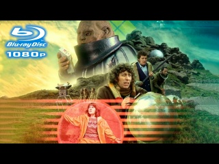
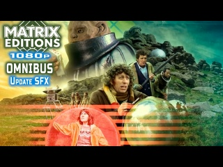
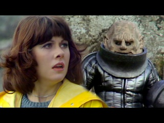
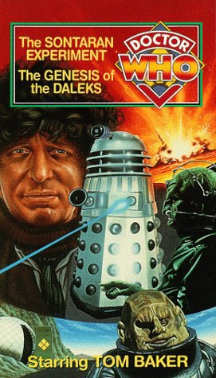
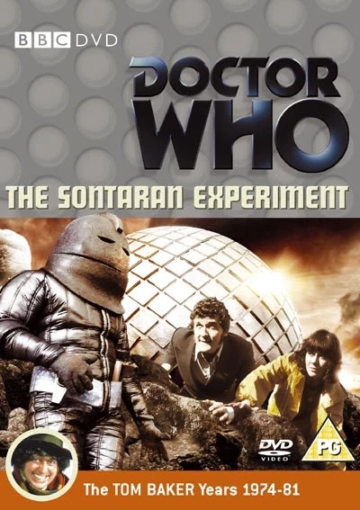
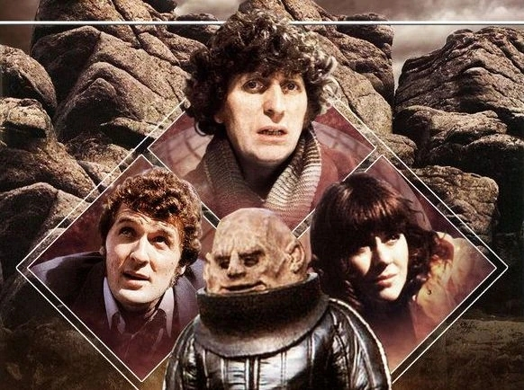
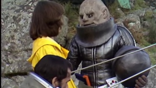

Субтитры: Русские и Английские |  |
|---|---|
с обновлением визуальных эффектов (cunningmunki) Субтитры: отсутствуют |  |
Субтитры: отсутствуют |  |
The Sontaran Experiment
Дата выхода: 22 февраля - 1 марта 1975
Формат: 2 эпизода по 25 мин.
|
Покинув ковчег «Нерва», Доктор с Сарой Джейн и Гарри телепортируются на Землю — чтобы проверить, безопасна ли планета для возвращения колонистов. Но Земля необитаема и полна ловушек: выжившие люди исчезают один за другим, а кто-то методично ставит над ними жестокие эксперименты, испытывая пределы человеческой выносливости. Второе появление сонтаранцев в сериале и одна из самых коротких серий классического «Доктора Кто» — всего две части, снятые целиком на натуре без студийных декораций.
 VHS - октябрь 1991 |  DVD - 9 октября 2006 |
|---|---|
 DVD-Boxset - 5 мая 2008 |  Blu-ray - 8 июля 2019 * Версия в нашей группе |


